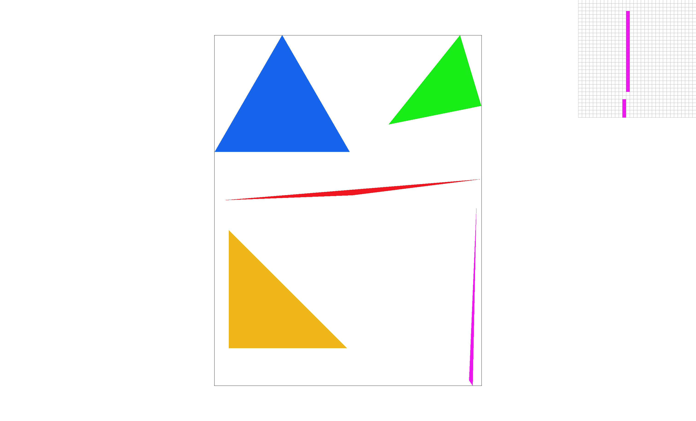
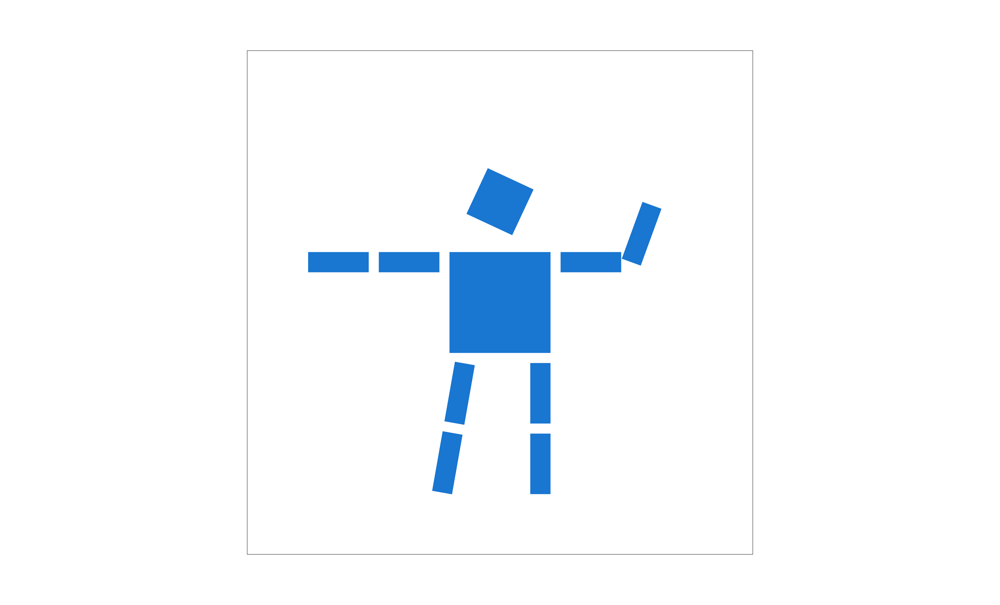
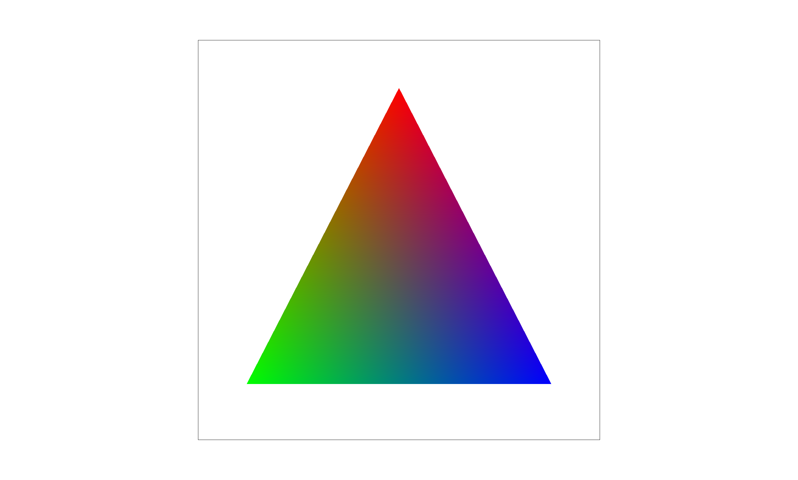
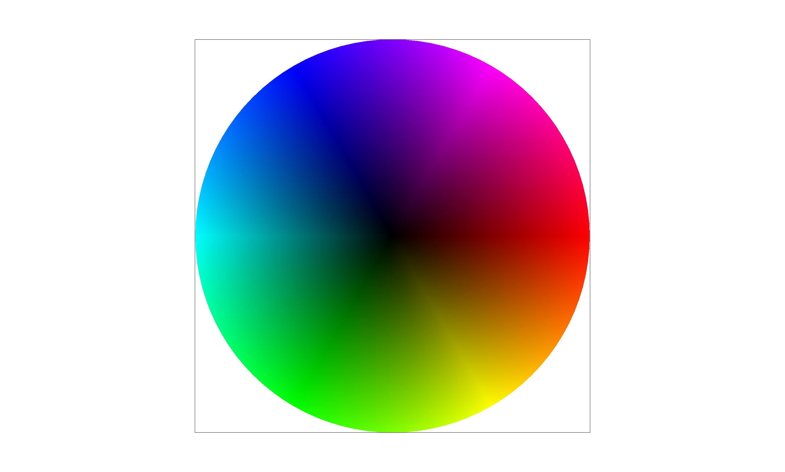
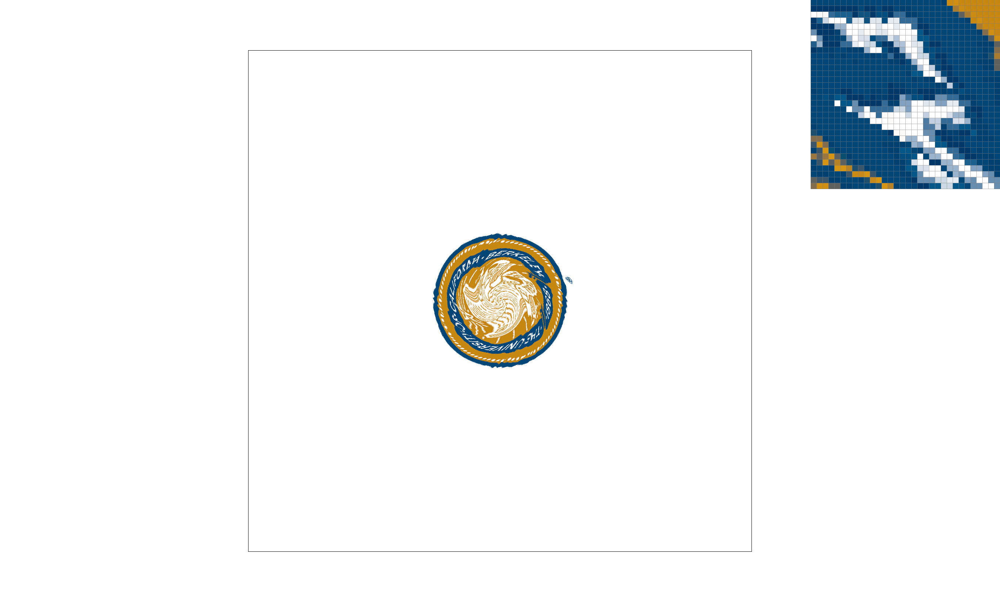
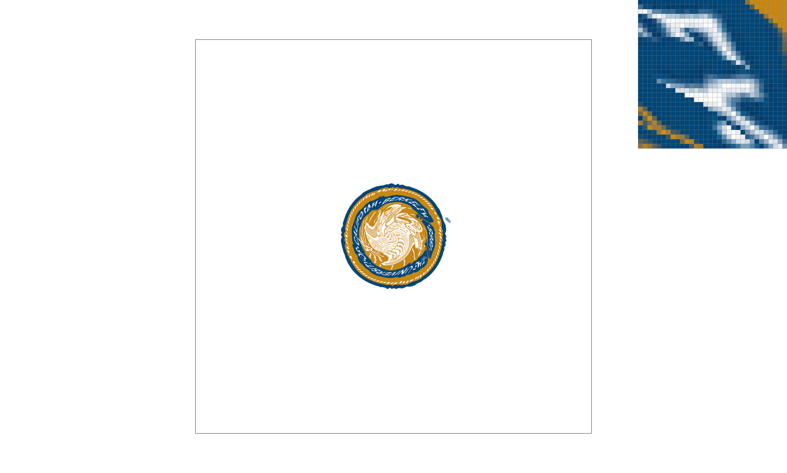
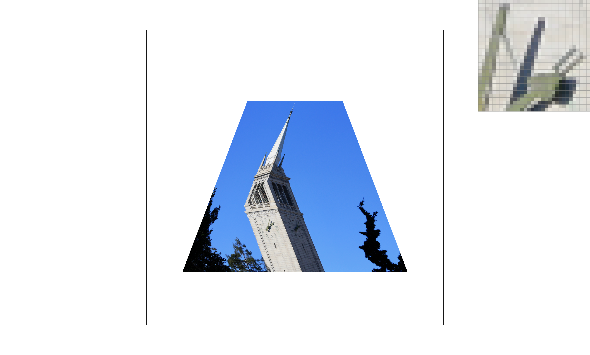

In this homework I built a rasterizer that converts SVG vector graphics into pixels. It starts with filling single-color triangles by testing whether each sample point lies inside all three edges, then adds supersampling to antialias jagged edges by averaging several samples per pixel. On top of that I implemented 2D transforms (translate, scale, rotate) as 3×3 homogeneous matrices, used barycentric coordinates to smoothly interpolate colors across a triangle, and mapped textures onto triangles using nearest and bilinear pixel sampling. Finally, I added mipmap level sampling so textures that are shrunk on screen don't alias.
What stood out to me was how often the same idea came back: the line/edge equation from lecture is used for the inside test, then again as the area weights for barycentric coordinates, and again to compute texture coordinates. I also learned that aliasing shows up in more than one form, jagged edges in geometry and shimmering in textures, and each needs its own fix.
Most of the math in this homework was familiar to me from other classes, like line equations, matrix transforms, weighted averages, and logarithms. Texture sampling still ended up being the newest part, not because of the math, but because of how it is applied. Bilinear filtering is just linear interpolation done in two directions, and choosing a mipmap level is just taking the log of how far you move in the texture per screen pixel. What I had never thought about before was treating a texture as a grid of texels that each screen pixel has to pick from, and the problem that when a texture is shrunk on screen, one pixel covers many texels at once. Nearest and bilinear sampling handle the zoomed-in case, and mipmaps handle the zoomed-out case by storing pre-averaged smaller copies of the texture and choosing the level that best matches the pixel's footprint.
To rasterize a triangle, I first find its bounding box by taking the smallest and largest x and y values of the three vertices. I round these outward to whole pixels and clamp them to the screen, so I never look at pixels outside the image. Then I loop over every pixel in that box and test whether the pixel's center, at (x + 0.5, y + 0.5), is inside the triangle.
The inside test uses the line equation from Lecture 2 (Drawing Triangles, "Line Equation" slide). For an edge from \(P_0\) to \(P_1\), let \(V\) be the vector from \(P_0\) to the point and \(N\) be the edge's normal (the edge direction rotated 90 degrees). Then
\( L(x, y) = V \cdot N = -(x - x_0)(y_1 - y_0) + (y - y_0)(x_1 - x_0) \)
The sign of this value tells me which side of the edge the point is on. A point is inside the triangle if it is on the inside of all three edges. Requiring all three values to be greater than zero only works if the vertices are listed in one particular order, so I accept either all positive or all negative. Checking both cases means the test works no matter which order the vertices are given in (clockwise or counterclockwise). I count a value of zero as inside (using \(\ge\) instead of \(>\)), so pixels whose centers land exactly on an edge are still filled. If the point is inside, I write the triangle's color into that pixel. I also skip triangles with zero area, since they cover nothing.
This algorithm is no worse than one that checks each sample within the bounding box, because that is exactly what it does. Every pixel in the bounding box is tested exactly once, and each test is a fixed amount of work (three edge values). Because the box is also clamped to the screen, triangles that go partly off-screen check even fewer pixels.

Why supersampling is useful. With one sample per pixel, each pixel is either fully the triangle's color or fully the background, depending only on whether its center is inside. This causes jaggies along edges, and very thin parts of a triangle can miss every pixel center and disappear, which is the gap visible in Task 1. Ideally, each pixel's value would be the fraction of the pixel covered by the triangle. Computing that exact area is hard, so supersampling approximates it by testing several points inside each pixel and averaging them.
Algorithm and data structures. For a sample rate of N×N I split each pixel into an N×N grid and test the center of each small cell, at \( (x + \frac{s_x + 0.5}{N},\ y + \frac{s_y + 0.5}{N}) \), with the same three edge tests from Task 1. Each of these results is stored separately in sample_buffer, a list of colors with width × height × sample_rate entries. Every pixel owns its own block of sample_rate entries, so the sample at subpixel \((s_x, s_y)\) of pixel \((x, y)\) lives at index (y × width + x) × sample_rate + s_y × N + s_x. When the frame is finished, I average the sample_rate colors in each pixel's block and write that average to the framebuffer.
Changes to the rasterization pipeline.
set_sample_rate and set_framebuffer_target resize sample_buffer to width × height × sample_rate whenever the sample rate or window size changes.rasterize_triangle loops over the subsamples inside each pixel of the bounding box instead of only the pixel center, and writes each covered subsample to its own slot.fill_pixel, used for points and lines, writes the same color into every subsample of the pixel. Otherwise lines like the black border in test4.svg would be averaged with white and fade out.resolve_to_framebuffer averages each pixel's subsamples before converting to 8-bit color.Results. The screenshots below show basic/test4.svg at the default view with the pixel inspector on the thin tip of the magenta triangle. At 1 sample per pixel, the tip breaks apart because some pixel centers along it fall outside the triangle. At 4 samples per pixel, pixels that are only partly covered get some of their subsamples inside, so they are drawn as a lighter magenta instead of white, and the gaps fill in. At 16 samples per pixel, each pixel can show 17 different coverage levels instead of 5, so the edge fades more smoothly and the tip looks continuous. The cost is that memory and the number of inside tests grow with the sample rate, so 16 samples per pixel uses 16 times the memory and does about 16 times the work of 1 sample per pixel.
Implementation. I implemented translate, scale, and rotate as 3×3 matrices in homogeneous coordinates, using the 2D transformation matrices from Lecture 4 (Transforms, "2D Transformations (homogenous coordinates)" slide). A 2D point \((x, y)\) is written as \((x, y, 1)\), which lets translation be a matrix multiplication just like scale and rotation:
\( T(t_x, t_y) = \begin{pmatrix} 1 & 0 & t_x \\ 0 & 1 & t_y \\ 0 & 0 & 1 \end{pmatrix} \)
\( S(s_x, s_y) = \begin{pmatrix} s_x & 0 & 0 \\ 0 & s_y & 0 \\ 0 & 0 & 1 \end{pmatrix} \)
\( R(\theta) = \begin{pmatrix} \cos\theta & -\sin\theta & 0 \\ \sin\theta & \cos\theta & 0 \\ 0 & 0 & 1 \end{pmatrix} \)
SVG gives rotation angles in degrees, so I convert to radians before taking the sine and cosine.
My robot. My cubeman is waving hello. Starting from robot.svg, I made these changes in my_robot.svg:
How the transforms build the pose. The whole robot is inside one group with translate(250 250), so every part is positioned relative to the torso. Each limb is its own nested group, and a child group's transform is applied inside its parent's, so moving or rotating a parent also moves everything attached to it. For the waving forearm, the transform is
translate(40 0) rotate(-70) translate(30 0)
inside the arm group at translate(90 -40). Transforms in a list are applied from right to left: translate(30 0) first slides the forearm so its inner end (the elbow) sits at the origin, rotate(-70) then swings it around that end, and translate(40 0) moves the elbow into place next to the upper arm. Because the y-axis in SVG points down, a negative angle turns the forearm upward on screen. The leg works the same way: translate(-40 90) rotate(10) moves to the hip first, and the rotation then swings the whole leg (both segments) around the hip.

What barycentric coordinates are. Barycentric coordinates describe any point inside a triangle as a weighted mix of the triangle's three corners. If the corners are \(A\), \(B\), and \(C\), then a point \(P\) inside the triangle can be written as
\( P = \alpha A + \beta B + \gamma C, \qquad \alpha + \beta + \gamma = 1 \)
(Lecture 6, Texture Mapping, "Barycentric Coordinates" slides). Each weight says how much the point "belongs" to that corner. At corner \(A\) the weights are \((1, 0, 0)\), halfway along the edge from \(A\) to \(B\) they are \((\frac{1}{2}, \frac{1}{2}, 0)\), and at the center of the triangle they are \((\frac{1}{3}, \frac{1}{3}, \frac{1}{3})\). If any weight is negative, the point is outside the triangle.
How I compute them. I use the "proportional areas" view from the same lecture. The point \(P\) splits the triangle into three smaller triangles, and each weight is the area of the small triangle opposite that corner divided by the area of the whole triangle:
\( \alpha = \frac{A_A}{A_A + A_B + A_C}, \quad \beta = \frac{A_B}{A_A + A_B + A_C}, \quad \gamma = \frac{A_C}{A_A + A_B + A_C} \)
This makes sense because as \(P\) moves toward corner \(A\), the triangle opposite \(A\) grows until it is the whole triangle, so \(\alpha\) goes to 1. To get the areas I reuse the line equation from Task 1, since its value is exactly twice the signed area of the triangle formed by an edge and the point. The factor of two cancels when I divide by the full triangle's area, and because the full area has the same sign as the small ones, the weights come out correct for either vertex order.
Interpolating color. For every sample point inside the triangle (all three weights at least zero), I blend the three vertex colors with the same weights:
\( \text{color}(P) = \alpha\, c_A + \beta\, c_B + \gamma\, c_C \)
The loops over the bounding box and subsamples are the same as in Task 2, so the colored triangles are still supersampled. The image below is a triangle I made with a red top corner, a green bottom-left corner, and a blue bottom-right corner. Each corner is its pure color, the middle of each edge is an even mix of the two corners it connects, and the center of the triangle is an equal mix of all three.


What pixel sampling is. A texture is an image made of a grid of colored squares called texels. Each triangle vertex has a texture coordinate \((u, v)\) between 0 and 1 that says which part of the image belongs at that corner. To color a sample point inside the triangle, I first find its \((u, v)\) by blending the three vertices' texture coordinates with the barycentric weights from Task 4. That \((u, v)\) usually lands somewhere between texel centers, so pixel sampling is the question of which texel color (or mix of texel colors) to use for that point.
How I find the position in the texture. I multiply \(u\) by the texture's width and \(v\) by its height to get a position measured in texels. Texel \(i\) covers the range from \(i\) to \(i + 1\), so its center is at \(i + 0.5\).
Nearest sampling. I use the color of the texel that the point falls in, which is texel \(\lfloor u \cdot \text{width} \rfloor\) across and \(\lfloor v \cdot \text{height} \rfloor\) down. This needs only one texel read, but every screen pixel that falls in the same texel gets exactly the same color.
Bilinear sampling. I blend the four texel centers around the point, using the bilinear filtering method from Lecture 6 (Texture Mapping, "Bilinear Filtering" slide). I subtract 0.5 from the texel position so it is measured from texel centers, take the floor to find the lower-left of the four surrounding texels \(u_{00}, u_{10}, u_{01}, u_{11}\), and use the leftover fractions \(s\) and \(t\) as blend amounts:
\( \text{lerp}(x, v_0, v_1) = v_0 + x(v_1 - v_0) \)
\( u_0 = \text{lerp}(s, u_{00}, u_{10}), \quad u_1 = \text{lerp}(s, u_{01}, u_{11}), \quad f(x, y) = \text{lerp}(t, u_0, u_1) \)
That is two horizontal blends followed by one vertical blend. Near the edges of the texture, I clamp the texel indices so I never read outside the image.
Comparison. The screenshots below use svg/texmap/test5.svg (the UC Berkeley seal, stretched over a swirled mesh) with the pixel inspector on the same spot in all four: the edges of the white letters in "BERKELEY". With nearest sampling at 1 sample per pixel, the letters have hard, jagged, stair-stepped edges, since each pixel copies exactly one texel and is either fully white or fully blue. With bilinear sampling at 1 sample per pixel, the same edges fade smoothly from white to blue, because pixels between texel centers get a blend of their neighbors. Going to 16 samples per pixel helps nearest sampling a little, since the 16 samples in a pixel can land in different texels and get averaged, but its edges are still harsher than bilinear at just 1 sample per pixel. Bilinear at 16 samples per pixel is the smoothest of the four. Bilinear sampling costs four texel reads and three blends per sample instead of one read, which is still much cheaper than taking 16 samples per pixel.
The difference between the two methods is largest when the texture is magnified, meaning one texel covers several screen pixels. Then nearest sampling repeats the same color across a block of pixels, while bilinear fills in smooth in-between colors. The difference is also more noticeable where the texture has sharp contrast, like thin lines or edges. When the texture is shown at about one texel per pixel, or shrunk down so many texels fall in one pixel, the two methods look much more alike, because there is little room to blend between neighboring texels. The shrinking case is what mipmaps in Task 6 handle.


What level sampling is. When a texture is drawn smaller than its real size, one screen pixel covers many texels. Nearest and bilinear sampling only look at one or four texels, so they ignore most of what is under the pixel, and fine details in the texture turn into noisy, shimmering patterns (aliasing). A mipmap fixes this by storing pre-shrunk copies of the texture: level 0 is the full-size image, level 1 is half the width and height with each texel being the average of a 2×2 block, level 2 is a quarter, and so on down to 1×1. Level sampling means choosing, for each sample, the mipmap level where one screen pixel covers about one texel, so the averaging over the pixel's area has already been done ahead of time.
Choosing the level. For each sample at screen position \((x, y)\), I compute the texture coordinate at \((x, y)\), at \((x + 1, y)\), and at \((x, y + 1)\), using the same barycentric interpolation as Task 5. Subtracting gives how far the texture coordinate moves when I step one pixel right or one pixel down. I scale those differences by the texture's width and height to measure them in texels, and then use the formula from Lecture 6 (Texture Mapping, "Computing Mipmap Level D" slide):
\( L = \max\left( \sqrt{\left(\frac{du}{dx}\right)^2 + \left(\frac{dv}{dx}\right)^2},\ \sqrt{\left(\frac{du}{dy}\right)^2 + \left(\frac{dv}{dy}\right)^2} \right), \qquad D = \log_2 L \)
\(L\) is how many texels one pixel step jumps across, and \(D\) is the matching level. For example, if one pixel step jumps 4 texels, then \(D = \log_2 4 = 2\), and level 2 has texels 4 times as wide, so one pixel covers about one texel there. If \(L \le 1\) (the texture is magnified), I use level 0, and I never go past the last level.
The three level sampling modes.
Pixel sampling (nearest or bilinear) is chosen separately, so either one can be used inside any of the three level modes. I also fixed a bug in the starter code where the loop that builds the mipmap skipped the last (1×1) level, which made extremely shrunk textures render black.
Tradeoffs between the three techniques.
Comparison. For my own example I used a photo of the Campanile, stretched onto a trapezoid so the texture is shrunk more at the narrow top than at the wide bottom. The full photo is 2776×2532 pixels, so it is shrunk everywhere on screen. All four screenshots use 1 sample per pixel, with the pixel inspector on the clock face.
With L_ZERO, both pixel sampling methods look almost the same: the clock hands are sharp but speckled, with isolated pixels that jump between light and dark. This is because each pixel reads from the full-size texture, where the texels under one pixel can be very different from each other, and bilinear only blends 4 of them, so it barely helps when the texture is shrunk. Switching to L_NEAREST changes the result much more than switching the pixel sampling method did. With L_NEAREST and bilinear sampling, the clock hands become smooth and a little blurry, because the chosen level has already averaged the texels under each pixel. With L_NEAREST and nearest pixel sampling, the speckle is gone, but the image looks blocky, since the lower-resolution level has larger texels and nearest sampling copies each one across several pixels. Overall, level sampling mattered most for this shrunk texture, and bilinear pixel sampling mattered most once a lower-resolution level was being used.

Texture: "UC Berkeley - Campanile" by Ryan Schwark, released under CC0 1.0 (public domain) on Wikimedia Commons.
I did not attempt this extra credit.